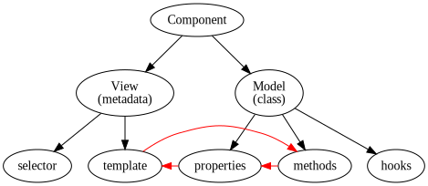

Components 101
The building blocksSections in this chapter
Component basics
The primary building block
Unlike its predecessor AngularJS, Angular is component centric.
The vast majority of your code is likely to be made up by components.
Much of what was housed in controllers in AngularJS has moved into components in Angular.
So, let's learn about components!
In Angular, components are made up by two parts:
- A model, represented by a
class, to hold values, methods and lifecycle hooks. - A view, represented as decorated metadata on the class, to hold template and related things.
This can be translated to the following structure map:

In the template we can read values from the model:

Also we can use model methods as event handlers in the template...

...which causes the values to change and to be read again.

Thus we get a uni-directional dataflow on a component scale.
We can boil the cycle down to this:
Understanding this cycle is absolutely central in learning about components!
Component styling
putting on the makeup
As you've already seen flash by, the Component metadata can have a styles property:
styles: ['h1 {text-decoration: none;}']
It should contain an array of CSS strings that will be applied.
As with the templates (which we just might have forgotten to mention!), we can also refer to external files:
styleUrls: ['app/css/usersection.css']
But, wait a minute. If we're just throwing regular CSS at the component, then how is it scoped?
Won't these styles just apply to everything?
Excellent question! As usual, it depends. :)
Specifically, it depends on our selected level of view encapsulation!
Angular offers two approaches for rendering components:
- as regular HTML (meaning no encapsulation)
- as Shadow DOM (meaning full encapsulation)
Shadow DOM, as an elevator pitch, is a way to have tiny contained documents within the larger document.
...you mean like iframes?
No, yuck!
Well, ok, yes. Sort of. But with controlled ways to interact with the context.
We control encapsulation through the encapsulation metadata property. It has three possible values:
| Native | Assume native shadow DOM support in the browser (which few have) |
| Emulated | Use an Angular-included emulation of shadow DOM. This is the default |
| None | Render component as regular HTML |
There are constants for the modes on the core-provided ViewEncapsulation object, so configuration looks like this:
@Component({
encapsulation: ViewEncapsulation.None,
...
The shadow DOM has some useful pseudo selectors:
:hostmatching the containing element:host-context()which lets us test the host context
Likely you'll only use :host.
And likely you're fine with the Emulated default, so for normal development you won't have to care at all!
The only things to remember are that...
- you can style the containing element with
:host - styles are scoped to the component (by default)
Reading model values
and he went hither
Let's get this show going by looking at how the view reads values from the model!
The template can read values from the model by using interpolation. Anything within double braces is evaluated as a model property:
@Component({
selector: 'app',
template: `<p>Hello, {{name}}!</p>`
})
export class AppComponent {
name = 'world'
}
See also the Hello someone demo.
But what if the value isn't static? Let's say we change our model to update 'world' to 'WORLD' after 1 second:
class AppComponent {
name = 'world'
constructor(){
setTimeout(()=> this.name='WORLD',1000)
}
}
To handle this, what do we need to do?
Nothing! This is the zone thing that we mentioned earlier. Zone enables Angular to check all bindings at every point in time when something might have changed, and update references accordingly.
See for yourself in the Hello Changing demo.
Interpolation isn't just for text nodes - sometimes we want model values in element properties too:
@Component({
selector: 'app',
template: `<input placeholder="{{helpText}}">`
})
export class AppComponent {
helpText = "Enter your name..."
}
Side note - remember our earlier look at the difference between a property and an attribute!
- an attribute is an attribute on the HTML element
- a property is a property on the resulting DOM node.
Since we are writing HTML code you'd think we're dealing with attribute, but as Angular deals exclusively with properties (well, almost) we will use that word instead.
Back to interpolation - those double brackets in a string really aren't pretty:
<input placeholder="{{helpText}}">
But there is an alternative syntax for properties which is more explicit, namely the bind- prefix:
<input bind-placeholder="helpText">
These two lines are completely equivalent.
The bind- prefix is prettier but still rather verbose:
<input bind-placeholder="helpText">
...so quickly the bracket shorthand became popular:
<input [placeholder]="helpText">
This is still equivalent to the previous versions.
See the different syntaxes side by side in the Property demo.
And note again that the bind- and bracket syntaxes are just for attributes. Inside a text node there is no choice, we must use double braces.
Template expressions
uncovering the lie
We've now seen how to reference model properties in the view:
@Component({
selector: 'app',
template: '<p>Hello {{name}}</p>'
})
export class AppComponent {
name = "Batman"
}
But we are actually not limited to referencing properties!
The code inside the interpolation/binding is called a template expression, and it is evaluated much like JavaScript:
You finished {{place === 1 ? 'FIRST!!' : 'in '+ place + ' place'}}
But not exactly like JavaScript expressions. Here are some important limitations:
- we can't do side effects, only pure expressions
- we can only reference model properties and methods, global variables are out of reach
There are also some additions when compared to JavaScript:
- aThe pipe operator
- bThe safe navigation operator
Let's briefly touch on these!
The pipe operator is familiar to AngularJS developers as a convenient way to call functions inside templates:
userName | UpperCase
We'll dig deeper into pipes later!
The safe navigation operator is recognisable from many other languages, for example CoffeeScript. It allows us to dig into objects without erroring if some step is undefined:
user.address?.street
Note that this is in contrast with AngularJS, where object navigating was inherently safe in their version of the template expressions.
Even though the template expressions are powerful, you should strive to keep them as simple as possible.
More complex logic should be done in the model.
Built-in directives
Not made to order
Although the subject of conversation is Components, we still need to talk about Directives. And actually, Components are a sub-group of Directives.
A directive, in the broad term, simply means something we put in the HTML that has special meaning. It directs the browser in how it should behave.
Like with AngularJS, a big part of learning the framework means learning what is already there!
We'll know explore what's already there in Angular, but first a word of warning: The demos we'll see will include concepts we've yet to explore! Don't let those get you down, we'll cover them soon enough.
So! In the case of Angular and directives, we get five of them to use in everyday templating. There are three structural directives...
- angFor
- bngIf
- cngSwitch
...and two helpers:
- dngClass
- engStyle
First ngFor, which as the name implies is a helper for rendering lists:
<div *ngFor="let msg of messages">{{ msg }}</div>
This will repeat the div for every item in the messages array.
Noticed the scary * character prefixing ngFor? That is a shorthand, which expands to this:
<ng-template ngFor let-msg [ngForOf]="messages">
<div>{{ msg }}</div>
</ng-template>
All structural directives, who change the HTML structure, uses the same * syntax.
You can see both variants of the for loop in the Forloop demo.
Equally mandatory as ngFor is the ngIf directive, which lets you optionally display something given the truthiness of an expression.
<p *ngIf="flag">I only show when flag is true!</p>
See this live in the If demo.
What if we have an if-else situation? There are two approaches;
- Simply use two
ngIfwith inverted clauses as in the IfElse demo. - Pick a connected
ng-templateas in the IfElseTemplate demo.
Then ngSwitch, which of course emulates a switch statement in the template.
But! We're actually not going to go into detail, as ngSwitch is rarely useful.
Such logic often belongs in the model, a subject we'll come back to.
If you're curious anyway, check out the Switch demo.
Now ngClass which can dynamically set a single style...
<div [class.someClass]="someCondition"></div>
...or many (keys are classes, values are conditions) :
<div [ngClass]="someObject"></div>
Try it in the Class Single and Class Many demos.
Finally ngStyle! Much like with ngSwitch we advise against using this directive for normal usage.
If you want to dynamically alter the style for an element - which is what it lets you do - it is better to add/remove a CSS class with ngClass.
There are however two good reasons for using ngStyle:
- The styles depend on state (think x- and y coordinates in a game)
- We're doing full-blown CSS in JS
But, if you are curious, check the Style Single and Style Many demos.
In this course we'll be focusing mostly on Components, but there's definitely more to say on directives.
See the Appendix for more details!
Gamebook - dynamism
hello someone
Let's revisit our Gamebook project! To start off,
- copy the folder for the first version,
- paste it right next to the first version, and
- give it the name
FF02-dynamic.
A static gamebook won't get us very far. Let's make it show dynamic cata instead!
Here's the plan - we need to:
- apackage the scene data somewhere
- bmake the component fetch data
- cmake the template read data from that prop
Having the scene data hard-coded in the component won't get us very far.
Let's create a new file data.ts for the data to live in!
The data file should export a single object containing our data. But let's look ahead - we're going to need more than one scene.
Therefore we should make the data file contain a full adventure!
The adventure object could look something like this:
export const myAdventure = {
title: 'A strange adventure',
scenes: {
someScene: { ...scene data goes here... }
// later there'll be more scenes here
}
}
Note that we chose to store scenes in an object as opposed to an array. If we chose an array instead, a link to scene 7 would break if we later insert a new scene at position 4, leading to a more brittle structure.
The scene object needs to contain...
- title
- img url
- text
- options array (a list of strings, for now)
Only make one single scene for now, containing what is currently in the template.
Now we adapt the component in app.ts:
- Import the adventure into the file
- Add an
adventureprop to the component - Initialise that prop to the imported adventure data
- Add a
sceneproperty to the component - Initialise that prop to the only scene in
this.adventure
Having done that, adapt the template to read the data from the scene prop instead! It will end up containing a bunch of interpolations referencing scene.title, etc.
It should also show adventure.title up top!
Now, the template is an actual template, capable of rendering any scene we throw at it.
Bundle your code as before (node build nameoffolder in the root), open index.html and make sure things still work!
There'll be no visible difference from the previous version, we've just done some preparation work for what is to come.
Challenge: If you have time over, let's employ some TypeScript power!
If you take on this challenge there will be further TypeScript challenges building on this one in the following exercises.
The plan is to make use of TypeScript interfaces to get code completion for adventure and scene data!
- aCreate a new file to house the interfaces
- bExport an interface describing the scene object
- cExport an interface describing the adventure object
- dMake the data file use the adventure interface
In a big project you would likely have one interface per file, but we can put them all in a single file.
Create a file for this purpose called interfaces.ts!
In that file we first export the Scene interface.
export interface Scene {
// definition in here
}
It should specify all four properties that a scene can contain. In the definition the keys are properties and the values are types!
To say that a property is an array of something, as we need to do with the options, put a pair of brackets at the end of the type:
options: string[]
Now also add an Adventure interface to the same file, describing the two adventure properties!
export interface Adventures {
// definition in here
}
The definition of the scenes prop (or pages or whatever you've decided to call it) is a bit special since it is an object with any number of keys where each value is a scene! This has the following special syntax:
scenes: {
[index: string]: Scene
}
Now, in data.ts, add a type annotation to the exported object saying that it is of type Adventure!
Not that we really need it yet, but we now have code completion for our data!